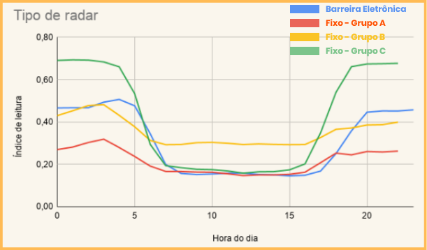

Acurácia de Radares
Análise dos Radares
Mapa abaixo utiliza parâmetros para análise dos radares, o parâmetro utilizado aqui é o indice de leitura, clique nos botões abaixo para filtrar as análises do mapa.
Fluxo de Veículos
Análise gráfica do íncide de leitura em relações com o fluxo de carro, antes e depois do horário de verão.

Índice por luminosidade
Análise gráfica do índice de leitura em relação ao período de luminosidade de cidade, antes e depois do horário de verão.
Tipo de Radar por índice
Cálculo análisa qual dos fornecedores tem maior indíce de leitura dos veículos.
Concessionária por Índice
Análisa qual dos fornecedores tem maior indíce de leitura dos veículos.